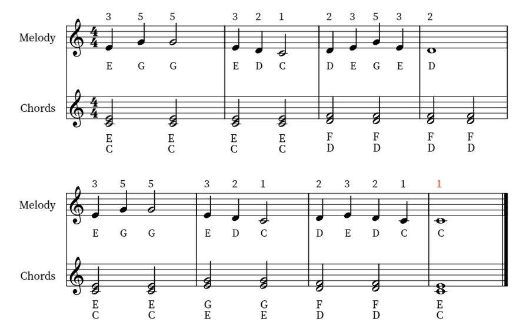

Radetzky March, Op. 228, is a march composed by Johann Strauss.First performed on 31 August 1848 in Vienna, it soon became quite popular among marching soldiers.
Instruments Of The Orchestra
Task 5 - ‘Radetzky March' by Johann Strauss
Mini Whiteboard Questions:
1. What instruments can you hear playing?
Flute Guitar Violin Cello Harp
Drums Vocals Bass Drums Saxophone
2. How would you describe the tempo of this song?
3. What do you think of when you hear this music?
New World Symphony - Melody

New World Symphony - Score

New World Symphony - Melody
New World Symphony - Chords